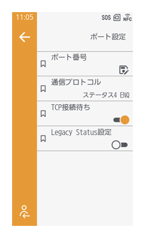

ネットワーク設定
IPアドレスを設定する
- IPアドレスの割り当て方法を選択します。
有線LANの場合： ［ネットワーク］ > ［有線］ > ［IPv4］、または［IPv6］の［モード］
無線LANの場合： ［ネットワーク］ > ［Wi-Fi］ > ［接続設定］ > ［IPv4］、または［IPv6］の［モード］ - ［IPアドレス］でIPアドレスを設定、確認します。
［モード］で［DHCP］を選択すると、DHCPサーバーから取得したIPアドレスが表示されます。
［固定アドレス］を選択した場合は、IPアドレスを手動で入力してください。
IPv6使用時に［自動］を選択した場合は、自動でIPアドレスが生成されます。

- ［モード］で［DHCP］を選択している場合には、［リース更新］が表示されます。タップすると、リース期間を更新し、DHCPサーバーからIPアドレスを再度取得します。
- 必要に応じて、サブネットマスク、デフォルトゲートウェイ、プレフィックス長、DNSサーバーのアドレスを設定してください。
- DNSサーバーには、最大で3つのIPアドレスを設定できます。IPアドレスはカンマで区切って設定してください。
TCP/IPポート番号を設定する
［通信設定］ > ［ネットワーク］ > ［有線］ > ［ポート設定］
［通信設定］ > ［ネットワーク］ > ［Wi-Fi］ > ［ポート設定］

［通信プロトコル］の設定により、表示される項目が異なります。
ポート1～3に使用するポート番号を指定し、設定をおこないます。
各ポートの用途は以下のとおりです。
- ポート1
STATUS4の2ポート接続時：印字データの受信
STATUS3/ STATUS5の1ポート接続時：印字データの受信とステータス返送 - ポート2
STATUS4の2ポート接続時の、ステータス返送 - ポート3
STATUS3/ STATUS4/ STATUS5の1ポート接続時の、印字データの受信とステータス返送

- 各ポート（1、2、3）は異なる設定値でなければなりません。また、他のサービスで使用していないポート番号を設定してください。正しく通信ができない要因になります。
- ［TCP接続待ち］が有効（初期値）の場合は、STATUS3/ STATUS4/ STATUS5の1ポート接続で接続してください。STATUS4の2ポート接続で接続した場合の動作は保証していません。
- ［TCP接続待ち］、［Legacy Status設定］、［Status4周期応答間隔］の設定は、通常は変更せずにご使用ください。
DHCPオプションを設定する
［通信設定］ > ［ネットワーク］ > ［有線］ > ［DHCPオプション］
［通信設定］ > ［ネットワーク］ > ［Wi-Fi］ > ［DHCPオプション］
DHCPサーバーオプションの設定をおこないます。
［IPv4］ > ［モード］、または［IPv6］ > ［モード］で［DHCP］を選択している場合のみ設定できます。
- ピリオドは区切り文字としてのみ入力できます。
- ［ホスト名］および［ユーザクラス］は、設定を空欄にすると設定自体が無効になります。
無線LANの接続設定を手動でおこなう
［通信設定］ > ［ネットワーク］ > ［Wi-Fi］ > ［接続設定］ > ［手動設定］
無線LANのSSIDやセキュリティ認証、周波数帯を設定します。
SSIDは、画面に表示される無線LANネットワークから選択するか、任意で入力することもできます。
使用する認証方式により表示される項目が異なります。
- キーインデックスの範囲は、接続する機器によって異なります。接続する機器のキーインデックスの範囲が0～ 3で本製品を「1」に設定した場合は、接続する機器を「0」に設定します。
- セキュリティの方式は、本製品、ホスト、ネットワーク機器で一致するように設定してください。
- ［周波数帯］で［6GHz］を選択している場合、［セキュリティ］は［WPA3］で固定となります。
- WEPキーの長さによって、［キー1］～［キー4］に設定できる文字数が異なります。
- キーの長さが64ビットの場合
ASCII：5文字
16進数：10文字 - キーの長さが128ビットの場合
ASCII：13文字
16進数：26文字
- キーの長さが64ビットの場合
- ［事前共有キー］は、8～63文字のASCII文字、または64桁の16進数で入力します。
プッシュボタン・PINコードで無線LAN接続する
プッシュボタン方式で接続する場合
- 設定画面から［通信設定］> ［ネットワーク］ > ［Wi-Fi］ > ［WPS］ > ［プッシュボタン方式］をタップします。
- 以下の画面が表示されたら、無線LAN機器のアクセスポイントのWPSボタンを押します。
- アクセスポイントとの接続が確立されると、画面に［接続完了］と表示されます。
PIN表示方式で接続する場合
- 設定画面から［通信設定］> ［ネットワーク］ > ［Wi-Fi］ > ［WPS］ > ［PIN表示方式］をタップします。
- 以下の画面が表示されたら、画面に表示されたPINコードを設定して、無線LANまたはコンピュータのアクセスポイントにアクセスします。

- アクセスポイントとの接続が確立されると、画面に［接続完了］と表示されます。
Wi-Fi Directを使用する
- 設定画面から［通信設定］> ［ネットワーク］ > ［Wi-Fi］ > ［Wi-Fi Direct］をタップします。
- ［デバイス名］に本製品のデバイス名を設定します。
1～32文字で入力します。アルファベット（大文字および小文字）、数字、および記号を使用できます。 - ［SSID］をタップし、接続できるデバイス名を検索し表示します。
本製品がGO（グループオーナー）のときは接続要求を受け入れます。 - 新しいグループを作成する場合やリストからグループを選択する場合は、［グループを開始］をタップします。
- 本製品や接続する機器の画面表示に従って、接続を完了します。
- 接続を終了する場合は、［切断］をタップします。
- 最大32台の機器を接続できます。
- Wi-Fi Directが有効な場合は、［デバイス名］を変更できません。
- ［グループを開始］と［グループを削除］は、Wi-Fiが有効で、本製品がWi-Fi Directネットワークに接続していないときのみ表示されます。
- ［グループを削除］は、Wi-Fiが有効で、本製品がWi-Fi接続している場合に表示されます。タップすると、グループが解除されます。
- グループを作成すると、本製品はGO（グループオーナー）に設定され、他の機器からの接続要求を待ちます。
- グループ接続中に本製品の電源を切った場合、本製品の電源を入れたあと、自動的にグループ接続します。